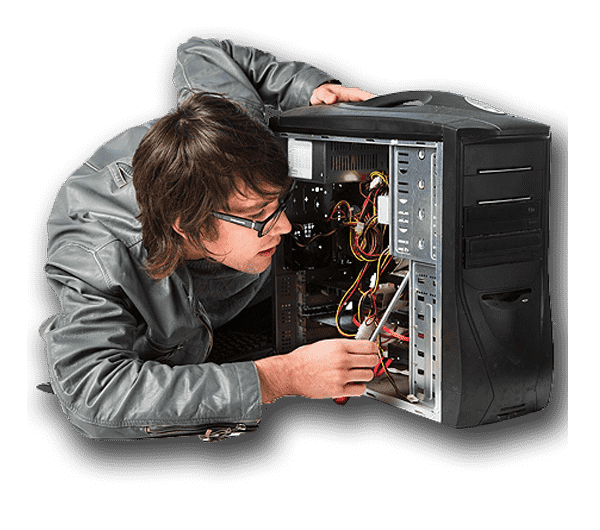

Todas las entradas
22 feb 2021
1 Min. de lectura
Soporte Informático

Actualizado: 13 ago 2021
Las empresas o negocios necesitan tener a mano un soporte informático para poder solventar los problemas técnicos que se vayan causando en el día a día. El soporte informático se trata de un servicio mediante el cual nosotros, ofrecemos asistencia técnica dando asesoramiento ante los posibles problemas.
Este trabajo puede proporcionarse por un especialista en este tema y se hará lo posible para que usted como cliente quede satisfecho con nuestro servicio.
Help Desk
Soporte Software Instalación y Configuraciones
1. Software Privado
- Windows
- Mac
- Unix
2. Software Libre
- GNU
- Linux
SoporteHardware
- Reparaciones de Componentes
- Reemplazo de Piezas y Dispositivos
¿Cómo trabaja un soporte técnico?
Cuando existe un contrato entre especialista y cliente, se deben especificar cuáles serán las acciones que se deberán realizar. Una vez se haya seleccionado al especialista y se decida si al proceso de soporte será físico, se tendrá que redactar un contrato en el que se especifiquen todas las medidas.
La importancia del mantenimiento informático
Es necesario llevar un cuidado riguroso:
Un ordenador necesita cuidados: con un mantenimiento adecuado, podrá prolongar en el tiempo la compra de nuevo material.
Estarán seguros gracias a los sistemas de seguridad que implementan los de mantenimiento.
Se podrán solucionar los problemas informáticos en poco tiempo y no será necesario pasarse horas buscando en Google qué ocurre. Contar con personal especializado evitará problemas a largo plazo.
20

10

1

Entradas Recientes